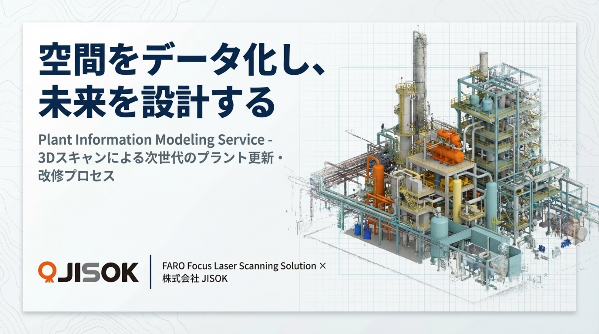
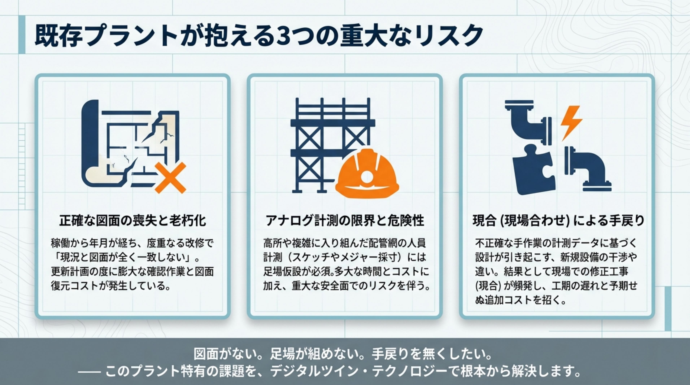
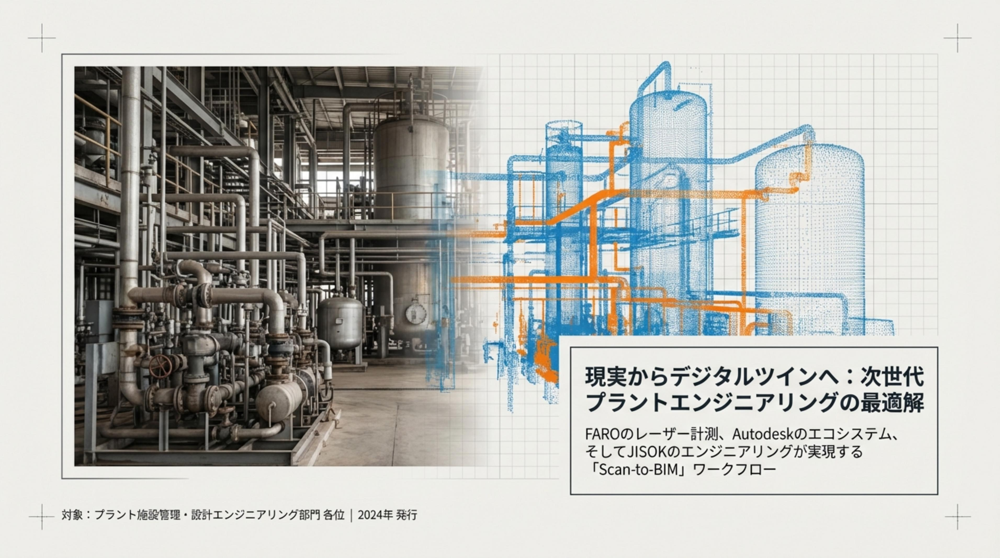
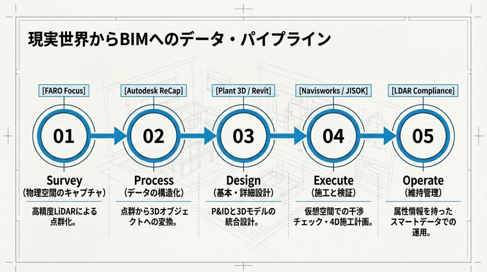
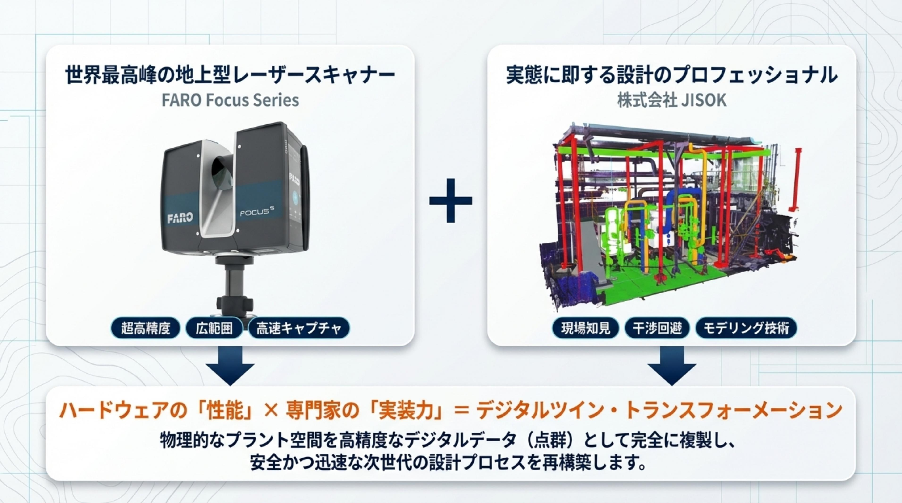

プラントの更新・改修を計画するとき、多くの現場で同じ壁にぶつかっています。
改修のたびに少しずつズレてきた図面。いざ工事の計画を始めると、現況と図面がまるで別物…というのはよくある話です。
高所の配管まわりを測るために、わざわざ足場を組んでいませんか？時間もコストも、安全面のリスクも大きな負担です。
設計段階では気づかなかった干渉が、現場で判明。手戻り工事は工期にも予算にも痛手です。


FARO Focusレーザースキャナーの性能と、15年の現場経験。この2つを掛け合わせて、プラントの課題を解決しています。
非接触のレーザースキャンだから、足場の設置は不要。地上から安全に、高所や狭所もスキャンできます。
1エリア（10×5×7m）あたり約1時間でスキャン完了。従来の手計測と比べて、現場の拘束時間を大幅に短縮します。
毎秒97.6万点をキャプチャ。手作業では避けられない測り忘れやヒューマンエラーとは無縁です。
3Dモデル上で仮想的にプラント内を歩き回れます。図面が読めない関係者とも、直感的に合意形成ができます。
物理空間のキャプチャ
高精度LiDARによる点群化
データの構造化
点群から3Dオブジェクトへ
基本・詳細設計
P&IDと3Dモデルの統合
施工と検証
仮想空間での干渉チェック
維持管理
スマートデータでの運用


図面がない、コストを抑えたい、工期を短くしたい。どんなご相談でも大丈夫です。現場の状況をお聞かせいただければ、最適な進め方をご提案します。